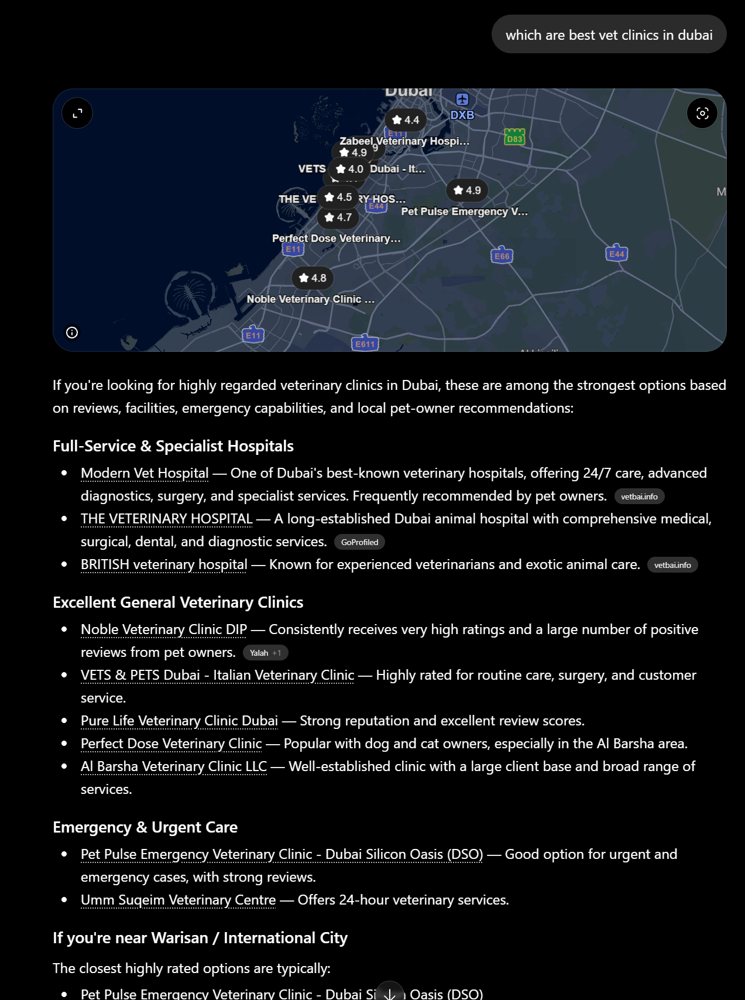
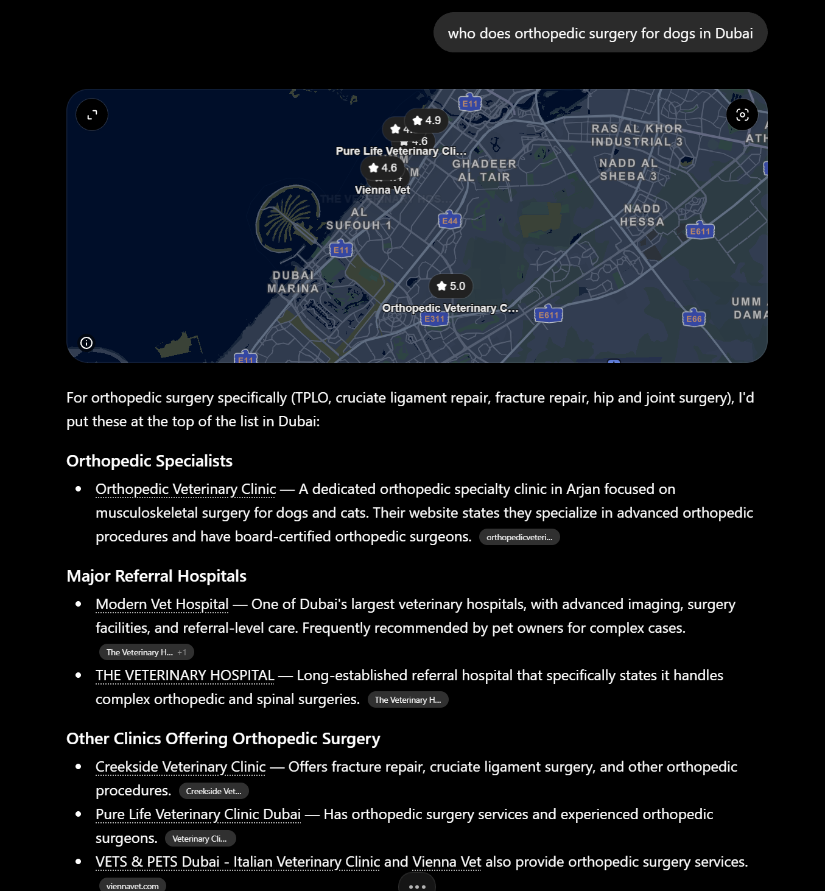
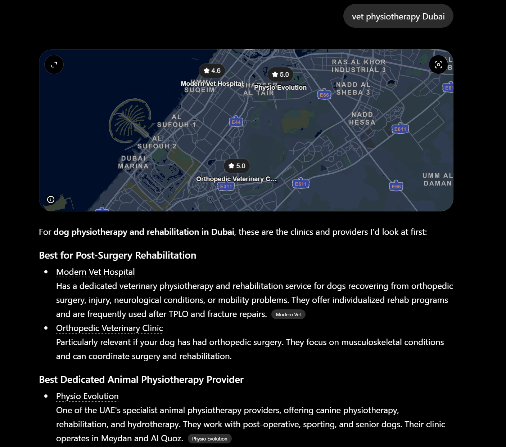
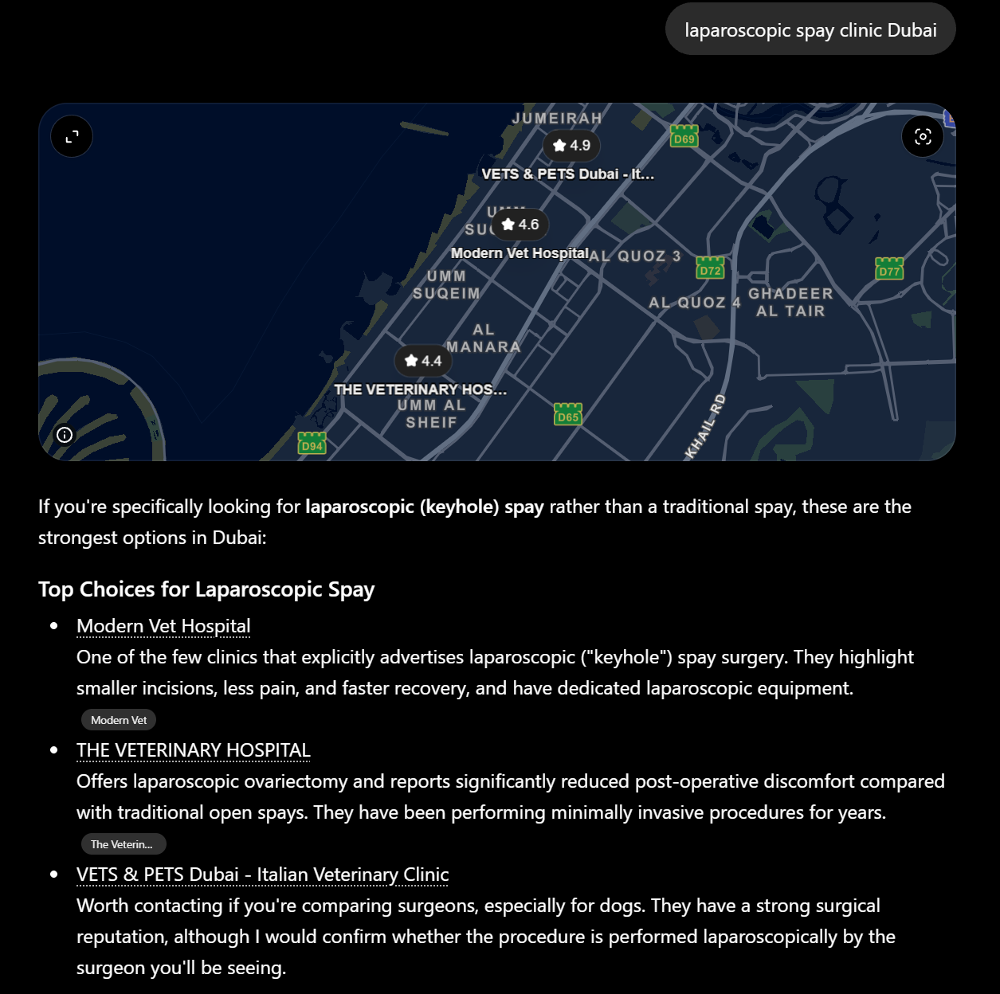

SEO · AI Visibility · Internal Report
AI Answer-Engine Visibility Report
How ChatGPT, Perplexity, Gemini, and Claude rank Modern Vet for procedure-specific searches in Dubai — what we win, where we lose, and the fix plan.
Trigger: Megan flag, 8 June 2026
Prepared by: Marketing
For: SEO Team + Leadership
TL;DR
Megan's report is partially correct. We tested four live ChatGPT queries:
- ✅ Best vet in Dubai (general) — Modern Vet is #1 in the "Full-Service & Specialist Hospitals" section, described as "One of Dubai's best-known veterinary hospitals... Frequently recommended by pet owners." But the citation badge is vetbai.info (a directory we don't control).
- ⚠️ Orthopedic surgery for dogs in Dubai — Modern Vet appears in the answer, but as a "Major Referral Hospital," NOT a top "Orthopedic Specialist." Worse: our description was lifted from a competitor's website (badge: The Veterinary H…).
- ✅ Laparoscopic spay Dubai — Modern Vet is #1 top choice. Badge: Modern Vet. We win.
- ✅ Vet physiotherapy Dubai — Modern Vet is #1 for post-surgery rehab. Badge: Modern Vet. We win.
Net read: we are not invisible. But we are being described by a competitor on the orthopedic query, and by a third-party directory on the general query. We need to make modernvet.com the authoritative source AI engines lift copy from.
How AI answer engines pick clinics (the model)
Unlike Google rank, ChatGPT and friends do this before answering a procedure query:
- Browse 4–12 web pages live for the exact query.
- Cross-reference the named clinics across multiple sources.
- Cite the source used to describe each clinic — shown as the small badge next to the clinic name.
- Down-rank clinics whose top mention comes only from their own marketing site.
- Up-rank clinics with mentions on directories, "best of" listicles, organic editorial, Reddit, and single-specialty domains.
The citation badge is the diagnostic gold mine. Every screenshot tells us exactly which source ChatGPT trusted enough to lift copy from.
Evidence — the four queries
"best vet in Dubai" — general query
Verdict: we win. Citation badge: vetbai.info — third-party directory.

Read: We do appear at the top. But ChatGPT used a directory to describe us. We don't control that copy.
"who does orthopedic surgery for dogs in Dubai"
Verdict: we appear but are not the top choice. Citation badge: The Veterinary H… +1 — described by a competitor.

Top 'Orthopedic Specialist' slot went to "Orthopedic Veterinary Clinic" in Arjan — a single-specialty clinic whose domain literally is the procedure. We are in the "Major Referral Hospitals" tier below them.
Hidden problem: Vienna Vet (our own group brand) is listed separately with badge viennavet.com — better citation than Modern Vet got — and ChatGPT does not know VV is part of the Modern Vet group.
"laparoscopic spay clinic Dubai"
Verdict: we are #1. Citation badge: Modern Vet — our own domain.

This is the model. Our page exists, is clearly written, AI lifted our copy from our own domain. Every procedure query should look like this.
"vet physiotherapy Dubai"
Verdict: we are #1 for post-surgery rehab. Citation badge: Modern Vet.

Physio Evolution is listed as the dedicated single-specialty provider. We win the post-op rehab niche, which is more valuable to us because it's tied to our surgical pipeline.
Pattern: when we win vs lose
| We WIN when… | We LOSE when… |
|---|
| The procedure page uses clean English matching the search term ("laparoscopic spay", "physiotherapy") |
The H1/title is broken English or generic ("Orthopedic Veterinary Dubai", "Healthy Animals Happier Homes") |
| The procedure has no single-specialty competitor with the procedure name in their domain |
A single-specialty clinic has the procedure name in their domain |
| Our page has FAQ + Article + Reviews schema |
The competitor has Reddit/forum mentions of the procedure by name |
| The procedure is one we genuinely lead on (lap spay, post-op physio) |
We compete as a generalist hospital against a sub-specialty positioning |
Already working FOR us
- Modern Vet Hospital appears in EVERY procedure-query answer above. We are never excluded.
/our-services/laparoscopic-spay/ and /our-services/physiotherapy/ are doing their job — AI lifts our own copy.- All 25 service pages are in the XML sitemap (
post-sitemap.xml). No structural sitemap issue.
- We are placed on TimeOut Dubai (3 articles) and FACT Magazines (2 articles) — see methodology section.
- Aggregate rating schema, FAQ schema, and Article schema are present on procedure pages.
The real problems to fix
1Critical
- We are described by competitors' websites on orthopedic queries (badge The Veterinary H…). Our own ortho page exists but is not authoritative enough for AI to lift the description from.
- The orthopedic page H1 is "Orthopedic Veterinary Dubai" — broken English. AI engines treat this as low-quality and avoid lifting copy from it.
- Vienna Vet competes against Modern Vet in AI answers with no group-link signal. Both brands exist in the same answer with no cross-link.
2High
- Sponsored content (TimeOut, FACT) is not being cited by AI engines. We need organic editorial mentions, not paid.
/llms.txt is incomplete and stale — only 7 services listed, dated 2025-10-06. Should list all 25.- No
/llms-full.txt — modern AI crawlers (Anthropic, OpenAI, Perplexity) increasingly look for this with full markdown bodies of priority pages.
3Medium
- Dead vanity URLs:
/orthopedic-surgery/ and /neutering/ return 404. Should 301 to the correct /our-services/... pages.
- Page title bug on
/our-services/spay-neuter/: "Cat & Dog Neutering Dubai: pet spaying cost" — lowercase, price-led, weak.
/our-services/spay-neuter/ live URL is actually /spay-neuter-old/. The word "old" is in the URL.- Duplicate H2s on
/spay-neuter/ ("Cat Sterilization in Dubai" appears twice, same for Dog).
4Lower
- No
MedicalProcedure JSON-LD schema on procedure pages (we use generic Article).
- No doctor byline pages for the surgeons performing ortho, lap spay, physio. Single-specialty competitors win partly because they put their named surgeon front and centre.
Recommended action
See companion document: SEO Team Task Brief (02-SEO-Team-Task-Brief.md). Two-phase plan:
- Phase 1 — On-site (4 weeks): title/H1/meta rewrites on 6 pages · llms.txt rebuild · llms-full.txt creation · MedicalProcedure schema · 301 redirects · Vienna Vet cross-brand JSON-LD signal · fix the
-old slug · de-dupe H2s.
- Phase 2 — Off-site (12 weeks): organic (NOT sponsored) editorial pitches · directory listings on vetbai.info / GoProfiled / Yalah · doctor byline pages · Reddit organic participation · procedure-named GBP review prompts.
- Phase 3 — Monitoring (ongoing): monthly AI-visibility tracking spreadsheet across 10 queries × 4 engines · GA4 AI-referrer segment.
Methodology & appendix
Test queries run live on ChatGPT, 2026-06-08:
- "best vet in Dubai" — general query
- "who does orthopedic surgery for dogs in Dubai"
- "laparoscopic spay clinic Dubai"
- "vet physiotherapy Dubai"
Site audit: Direct HTTP fetch of priority procedure pages with HTML inspection for title, meta, H1, H2, JSON-LD schema. Sitemap verified against https://modernvet.com/sitemap_index.xml. /llms.txt contents inspected at source. 404 status confirmed on legacy vanity URLs.
Editorial mentions cross-checked (NOT cited by ChatGPT):
All five are marked as sponsored content in the URL slug. AI engines de-prioritise sponsored content as a recommendation source. This is itself a finding.